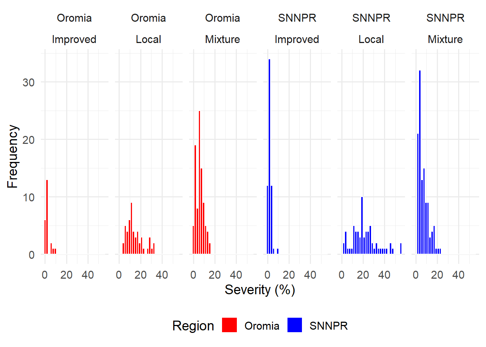

#Carregando pacote
library(tidyverse)
#Importando arquivo CSV do Git Hub
cr <- read_csv("https://raw.githubusercontent.com/emdelponte/paper-coffee-rust-Ethiopia/master/data/survey_clean.csv")Análise exploratória: Visualização de dados
Visualização de Dados
A visualização de dados é um componente essencial na análise de dados, permitindo que você explore, entenda e comunique padrões, tendências e insights de forma eficaz. Utilizando gráficos e tabelas, você pode transformar dados brutos em informações visuais compreensíveis, facilitando a interpretação e tomada de decisões. No R, pacotes como ggplot2, tidyverse e patchwork oferecem ferramentas poderosas para criar visualizações sofisticadas e personalizadas.
Abrindo e importando Arquivo CSV
Para abrir uma planilha em formato .CSV, utilizamos o pacote tidyverse. Este pacote inclui o readr, que oferece a função read_csv para ler arquivos CSV de maneira eficiente.
Caso hajam dúvidas sobre como abrir e importar arquivos ou os arquivos estejam em outros formatos, sugiro ler a aula “Importando Datasets” na aba “Básico”.
Configurando o Chunk
Uma dica importante é colocar dentro do primeiro chunk, #| warning: false e #| message: false para não sejam exibidos avisos e mensagens ao renderizar o documento. Se preferir, você pode aplicar essa configuração a todos os chunks colocando no cabeçalho do documento.
Explorando os dados
Explorar e entender os dados é fundamental para uma boa análise destes dados. A função head apresenta um sumário dos dados, com as 6 primeiras linhas e as colunas existentes, com o nome da variável e o tipo da variável. Assim essa função permite um entendimento do que são os seus dados, variáveis e tipo delas.
head(cr)# A tibble: 6 × 13
farm region zone district lon lat altitude cultivar shade
<dbl> <chr> <chr> <chr> <dbl> <dbl> <dbl> <chr> <chr>
1 1 SNNPR Bench Maji Debub Bench 35.4 6.90 1100 Local Sun
2 2 SNNPR Bench Maji Debub Bench 35.4 6.90 1342 Mixture Mid shade
3 3 SNNPR Bench Maji Debub Bench 35.4 6.90 1434 Mixture Mid shade
4 4 SNNPR Bench Maji Debub Bench 35.4 6.90 1100 Local Sun
5 5 SNNPR Bench Maji Debub Bench 35.4 6.90 1400 Local Sun
6 6 SNNPR Bench Maji Debub Bench 35.4 6.90 1342 Mixture Mid shade
# ℹ 4 more variables: cropping_system <chr>, farm_management <chr>, inc <dbl>,
# sev2 <dbl>Outra opção para visualizar o conjunto de dados é a função glimpse que mostra detalhes da tabela, como nome da variável, tipo e uma pequana amostra dos dados desta váriaveis.
glimpse(cr)Rows: 405
Columns: 13
$ farm <dbl> 1, 2, 3, 4, 5, 6, 7, 8, 9, 10, 11, 12, 13, 14, 15, 16,…
$ region <chr> "SNNPR", "SNNPR", "SNNPR", "SNNPR", "SNNPR", "SNNPR", …
$ zone <chr> "Bench Maji", "Bench Maji", "Bench Maji", "Bench Maji"…
$ district <chr> "Debub Bench", "Debub Bench", "Debub Bench", "Debub Be…
$ lon <dbl> 35.44250, 35.44250, 35.42861, 35.42861, 35.42861, 35.3…
$ lat <dbl> 6.904722, 6.904722, 6.904444, 6.904444, 6.904444, 6.90…
$ altitude <dbl> 1100, 1342, 1434, 1100, 1400, 1342, 1432, 1100, 1400, …
$ cultivar <chr> "Local", "Mixture", "Mixture", "Local", "Local", "Mixt…
$ shade <chr> "Sun", "Mid shade", "Mid shade", "Sun", "Sun", "Mid sh…
$ cropping_system <chr> "Plantation", "Plantation", "Plantation", "Plantation"…
$ farm_management <chr> "Unmanaged", "Minimal", "Minimal", "Unmanaged", "Unman…
$ inc <dbl> 86.70805, 51.34354, 43.20000, 76.70805, 47.15808, 51.3…
$ sev2 <dbl> 55.57986, 17.90349, 8.25120, 46.10154, 12.25167, 19.91…Histogramas e Resumos
Os histogramas ajudam a observar a distribuição dos dados, a função para isso é geom_histogram() do pacote ggplot2. Podemos plotar um histograma para cada região utilizando o facet_wrap.
library(ggplot2)
# Histogramas de incidência por região
cr |>
ggplot(aes(x = inc))+
geom_histogram()+ #Histograma
facet_wrap(~region) #Separa por região.`stat_bin()` using `bins = 30`. Pick better value with `binwidth`.
Além disso, o comando summary fornece um sumário estatístico das variáveis. E assim como foi plotado um histograma para cada região, podemos pedir um sumário para cada região ou até por cultivar agrupando utilizando a função group_by().
Dentro da função summarize, podemos utilizar as funções para obter a média, mediana e desvio padrão através das funções mean(), median() e sd(), respectivamente.
# Sumário dos dados de incidência
summary(cr$inc) Min. 1st Qu. Median Mean 3rd Qu. Max.
9.50 19.43 32.50 34.89 48.20 86.71 # Estatísticas de incidência por região
cr |>
group_by(region) |>
summarize(inc_mean = mean(inc),
inc_med = median(inc),
sd_mean = sd(inc))# A tibble: 2 × 4
region inc_mean inc_med sd_mean
<chr> <dbl> <dbl> <dbl>
1 Oromia 37.0 39.5 14.6
2 SNNPR 33.4 29.6 18.9# Estatísticas de incidência por cultivar
cr |>
group_by(cultivar) |>
summarize(inc_mean = mean(inc),
inc_med = median(inc),
sd_mean = sd(inc))# A tibble: 3 × 4
cultivar inc_mean inc_med sd_mean
<chr> <dbl> <dbl> <dbl>
1 Improved 16.4 15.2 5.66
2 Local 53.4 50.9 14.3
3 Mixture 31.9 31.6 11.2 Mas o que é media, mediana e desvio padrão?
A média (mean) é a soma de todos os valores dividida pelo número total de observações. Ela fornece uma ideia do valor central dos dados.
A mediana (Median) é o valor central de um conjunto de dados ordenado. Se o número de observações for par, é a média dos dois valores centrais. Ela divide os dados em duas metades iguais.
O desvio padrão (Standard Deviation) mede a dispersão dos valores em relação à média. Um desvio padrão alto indica valores espalhados, enquanto um desvio padrão baixo indica valores próximos à média.
Gráfico de Dispersão
Para observar a relação entre duas variáveis, podemos utilizar gráficos de dispersão e para observar essa relação pode ser utilizado a função geom_point().
cr |>
ggplot(aes(inc, sev2))+
geom_point()
Podemos obervar melhor a simetria das variáveis, se a mediana e média dos dados forem mais próximas uma da outra, a curva é simétrica. Se os dados forem não simétricos, podemos observar uma assimetria com cauda para a direita ou a esquerda.
library(ggplot2)
cr |>
ggplot(aes(x = sev2))+
geom_histogram()+
facet_wrap(~region) #Separa por região.`stat_bin()` using `bins = 30`. Pick better value with `binwidth`.
summary(cr$sev2) Min. 1st Qu. Median Mean 3rd Qu. Max.
0.2248 2.6892 5.9490 9.0945 12.1593 55.5799 cr |>
group_by(region) |>
summarize(sev_mean = mean(sev2),
sev_med = median(sev2),
sd_mean = sd(sev2))# A tibble: 2 × 4
region sev_mean sev_med sd_mean
<chr> <dbl> <dbl> <dbl>
1 Oromia 8.06 6.23 6.82
2 SNNPR 9.81 4.88 10.5 Assim, relembrando, a simetria das variáveis pode ser observada através de histogramas e variáveis simétricas terão médias e medianas próximas, enquanto variáveis assimétricas não apresentam médias e medianas próximas e podem mostrar caudas ao ser plotado o histograma como o exemplo acima.
Porém, se formos olhar por cultivar, os dados ficam mais simétrico, como mostrado abaixo:
library(ggplot2)
cr |>
ggplot(aes(x = sev2))+
geom_histogram()+
facet_wrap(~cultivar) #Separa por região.`stat_bin()` using `bins = 30`. Pick better value with `binwidth`.
summary(cr$sev2) Min. 1st Qu. Median Mean 3rd Qu. Max.
0.2248 2.6892 5.9490 9.0945 12.1593 55.5799 cr |>
group_by(cultivar) |>
summarize(sev_mean = mean(sev2),
sev_med = median(sev2),
sd_mean = sd(sev2))# A tibble: 3 × 4
cultivar sev_mean sev_med sd_mean
<chr> <dbl> <dbl> <dbl>
1 Improved 2.16 1.64 1.82
2 Local 18.7 17.2 11.1
3 Mixture 6.47 5.43 4.35Personalizando Gráficos
Os gráficos podem ser personalizados de uma infinidade de formas, por exemplo, podemos modificar as cores por região. Lembrando de colocar fill na função ggplot, se for colocado depois ele irá alterar os gráficos. De mesma forma quando usamos um tema, como o theme_minimal usado no exemplo, tem que ver após o scale_fill_manual, pois irá sobrescever o tema anterior.
library(ggthemes)
cr |>
ggplot(aes(x = sev2, fill = region))+ #Aqui foi adicionado o fill
geom_histogram(color = "white")+ #Color aqui é para aborda das barras do histograma.
facet_wrap(region ~ cultivar, ncol = 6)+ #ncol coloca o número de colunas por plot
#scale_fill_colorblind() #Aqui altera a plheta de cores
scale_fill_manual(values = c("red", "blue"))+ #escolha manual
theme_minimal(base_size = 14)+ #vem depois, se não sobrescreve o scale_fill_manual, aqui também altera a fonte com base_size)
theme(legend.position = "bottom")+
labs(y = "Frequency",
x = "Severity (%)",
fill = "Region") #Alterou o nome, que estava como o da variável`stat_bin()` using `bins = 30`. Pick better value with `binwidth`.
ggsave("cr1.png", bg ="white")Saving 7 x 5 in image
`stat_bin()` using `bins = 30`. Pick better value with `binwidth`.Criação de subconjunto
Seleção e Filtro
Para criar subconjuntos de dados, podemos selecionar as colunas com a função select() e podemos atribuir este subconjunto a um objeto, como no exemplo o objeto cr2. No exemplo foram selecionados as colunas, ou variáveis, fazenda (farm), região (region), cultivar (cultivar) e severidade (sev2).
cr2 <- cr |>
select(farm, region, cultivar, sev2) #select é pra colunas
cr2# A tibble: 405 × 4
farm region cultivar sev2
<dbl> <chr> <chr> <dbl>
1 1 SNNPR Local 55.6
2 2 SNNPR Mixture 17.9
3 3 SNNPR Mixture 8.25
4 4 SNNPR Local 46.1
5 5 SNNPR Local 12.3
6 6 SNNPR Mixture 19.9
7 7 SNNPR Mixture 11.9
8 8 SNNPR Local 55.6
9 9 SNNPR Local 11.6
10 10 SNNPR Mixture 11.4
# ℹ 395 more rowsPodemos também, filtrar os dados usando o filter() do pacote dplyr em conjunto com a função select() para escolher colunas e filtrar as linhas.
#Filtra Oromia
cr_oromia <- cr |>
select(farm, region, cultivar, sev2) |> #select é pra colunas
filter(region == "Oromia")
cr_oromia# A tibble: 165 × 4
farm region cultivar sev2
<dbl> <chr> <chr> <dbl>
1 286 Oromia Mixture 7.63
2 287 Oromia Mixture 9.39
3 288 Oromia Mixture 1.30
4 289 Oromia Mixture 9.79
5 290 Oromia Local 18.5
6 291 Oromia Mixture 13.2
7 292 Oromia Mixture 5.60
8 293 Oromia Mixture 1.06
9 294 Oromia Local 17.6
10 295 Oromia Mixture 15.4
# ℹ 155 more rows#Filtra SNNPR
cr_pr <- cr |>
select(farm, region, cultivar, sev2) |>#select é pra colunas
filter(region == "SNNPR")
cr_pr# A tibble: 240 × 4
farm region cultivar sev2
<dbl> <chr> <chr> <dbl>
1 1 SNNPR Local 55.6
2 2 SNNPR Mixture 17.9
3 3 SNNPR Mixture 8.25
4 4 SNNPR Local 46.1
5 5 SNNPR Local 12.3
6 6 SNNPR Mixture 19.9
7 7 SNNPR Mixture 11.9
8 8 SNNPR Local 55.6
9 9 SNNPR Local 11.6
10 10 SNNPR Mixture 11.4
# ℹ 230 more rowsVisualizando subconjuntos
Ainda podemos gerar gráficos ggplot2 para cada subconjunto para uma melhor visualização dos dados. No caso utilizamos o boxplot através da função geom_boxplot(), também do pacote ggplot2.
O box plot é uma representação gráfica que mostra a distribuição de um conjunto de dados de maneira resumida, destacando a mediana, os quartis e os outliers. Os componentes de um boxplot são:
Caixa:
Quartil Inferior (Q1): Marca os 25% mais baixos dos dados.
Mediana (Q2): O valor central dos dados (50%).
Quartil Superior (Q3): Marca os 75% mais baixos dos dados.
Whiskers:
- Linhas que se estendem dos quartis até o valor mínimo e máximo dentro de 1.5 vezes o intervalo interquartil (IQR).
Outliers:
- Pontos fora do alcance dos whiskers, indicando valores atípicos.
cr_oromia |>
ggplot(aes(x = cultivar,
y = sev2))+
geom_boxplot()+
labs(title = "Oromia",
X = "Cultivar",
y = "Severity (%)")cr_pr |>
ggplot(aes(x = cultivar,
y = sev2))+
geom_boxplot()+
labs(title = "SNNPR",
X = "Cultivar",
y = "Severity (%)")O box plot é útil para identificar a mediana, a dispersão, a assimetria e os outliers em um conjunto de dados, facilitando a comparação entre diferentes grupos ou categorias.
Gráficos lado a lado.
Gráficos exibidos lado a lado podem auxiliar na percepção de diferença entre dois grupos quando queremos apresenta-las ao leitor de um artigo, por exemplo. Assim, para plotar dois gráficos lado a lado iremos utilizar a biblioteca patchwork, sem usar o face_wrap.
p1 <- cr_oromia |>
ggplot(aes(x = cultivar,
y = sev2,
fill = cultivar))+
geom_boxplot()+
labs(x = "Cultivar",
y = "Severity (%)")#+ #lembrar de tirar o comentário do +
#coord_flip() #rotaciona as coordenadas
p2 <- cr_pr |>
ggplot(aes(x = cultivar,
y = sev2,
fill = cultivar))+
geom_boxplot()+
labs(x = "Cultivar",
y = "Severity (%)")#+ #lembrar de tirar o comentário do +
coord_flip() #rotaciona as coordenadas<ggproto object: Class CoordFlip, CoordCartesian, Coord, gg>
aspect: function
backtransform_range: function
clip: on
default: FALSE
distance: function
expand: TRUE
is_free: function
is_linear: function
labels: function
limits: list
modify_scales: function
range: function
render_axis_h: function
render_axis_v: function
render_bg: function
render_fg: function
setup_data: function
setup_layout: function
setup_panel_guides: function
setup_panel_params: function
setup_params: function
train_panel_guides: function
transform: function
super: <ggproto object: Class CoordFlip, CoordCartesian, Coord, gg>library(patchwork)
(p1 + p2) + #Pode ser + ou |, se colocar / coloca um sobre o outro. Ele funciona como equação, pode ser feito combinação dos gráficos como p1/(p2+p1)
plot_layout(guides = "collect") + #Deixa somente uma legenda
plot_annotation(tag_levels = "A") #Diferencia maiúsculas e minúsculas
ggsave("patch.png")Saving 7 x 5 in imagePodemos usar o artifício da função coord_flip(), para rotacionar as coordenadas de uma imagem ou das duas, caso fique visualmente mais adequado para a explicação dos dados.
p1 <- cr_oromia |>
ggplot(aes(x = cultivar,
y = sev2,
fill = cultivar))+
geom_boxplot()+
theme_few() +
labs(x = "Cultivar",
y = "Severity (%)")+
coord_flip() #rotaciona as coordenadas
p2 <- cr_pr |>
ggplot(aes(x = cultivar,
y = sev2,
fill = cultivar))+
geom_boxplot()+
theme_few() +
labs(x = "Cultivar",
y = "Severity (%)")+
coord_flip() #rotaciona as coordenadas
#Não consegui instalar o patchwork
library(patchwork)
(p1 / p2) + #pode ser + ou |, se colocar / coloca um sobre o outro. Ele funciona como equação, pode ser feito combinação dos gráficos como p1/(p2+p1)
plot_layout(guides = "collect",
axes = "collect")+ #Deixa somente uma legenda
plot_annotation(title = "Coffe rust is Ethiopia",
caption = "source: Serafini (2024)",
tag_levels = "A") #diferencia maiúsculas e minúsculasggsave("patch2.png", width = 5, height = 4)Outra opção de combinações que o pacote permite é a sobreposição de gráficos através da função inset_element(), onde é inserido o gráfico que se deseja plotar e as dimensões/posições deste na imagem. Este é um excelente artifício para exibir informações gráficas complementares em uma mesma imagem.
p1 <- cr_oromia |>
ggplot(aes(x = cultivar,
y = sev2,
fill = cultivar))+
geom_boxplot()+
theme_few() +
labs(x = "Cultivar",
y = "Severity (%)")+
coord_flip() #rotaciona as coordenadas
p3 <- cr_oromia |>
ggplot(aes(x = sev2))+
geom_histogram() +
labs(y = "Freq.",
x = "Severity (%)")
p1 + inset_element(p3, left = 0.6,
bottom = 0.6,
right = 1,
top = 1) +
plot_annotation(title = "Coffe rust is Ethiopia",
caption = "source: Serafini (2024)",
tag_levels = "A") #diferencia maiúsculas e minúsculas`stat_bin()` using `bins = 30`. Pick better value with `binwidth`.ggsave("patch3.png", width = 5, height = 4)`stat_bin()` using `bins = 30`. Pick better value with `binwidth`.O patchwork tem várias possíbilidades interessantes, vale a pena olhar a ajuda (help) deste pacote!